三角洲行动 搜打撤及数值系统拆解

注：作者自S7入坑以来游戏时长1000+h，每赛季都是高活跃度的多玩法玩家（从猛攻到跑刀到整活），S10机密KD4.1/绝密KD2.2，每赛季都会关注三角洲的补丁更新、各枪械/干员数值评测、游戏运营过程中的各大活动与争议。以下，我将依托个人经验和社区已有文章，重点拆解其主要营收来源项目烽火地带，希望能给自己和读者带来一定的思考借鉴。
零、开始之前——基本机制介绍（产品定位与基础架构）
0.1 一句话定位
《三角洲行动》（Delta Force）是腾讯天美 J3 工作室（琳琅天上 / Team Jade）用虚幻引擎打造的「多端互通战术射击 GaaS」，把 Tarkov 式的硬核搜打撤、Battlefield 式的大战场、以及带职业技能的干员体系三件事揉进同一个免费长线运营产品里。
它的核心赌注是：用「搜打撤」抓硬核 FPS 用户，用「大战场」和「干员技能」降门槛抓泛用户，再用「全平台 + 全自控 IP」做长线收入。
0.2 产品定位与市场
| 维度 | 内容 |
| 研发 | 腾讯天美工作室群 J3 工作室（琳琅天上团队），对外代号 Team Jade |
| 发行 | 国内腾讯；海外 Level Infinite；SEA/MENA/LATAM 由 Garena 代理 |
| 引擎 | 战役用 UE5；多人联网用 UE4（官方路线图：2026 H2 计划整体迁移 UE5） |
| 反作弊 | ACE（Anti-Cheat Expert），内核级 Ring 0，上线初期因卸载残留、与其他反作弊冲突引发争议 |
| 上线时间线 | 2024-09-26 国服公测（PC+移动）→ 2024-12-05 全球 PC（Steam 非删档）→ 2025-02-21「黑鹰坠落」战役 PC DLC → 2025-04-22 全球手游 → 2025-08-19 PS5 / Xbox Series X\ |
| 战略标签 | 腾讯首个「四全」IP：全球化发行、全终端上线、全平台打通、全自控 IP（无 IP 授权费、分成自由） |
| 规模（第三方报道） | 国内 DAU 峰值 2025-04 破 1200 万、2025-07 破 2000 万、2025-09 破 3000 万；Steam 同屏峰值 2025-09 约 24.7 万、2026-06 约 11–12 万；全球手游上线首 4 日注册破千万，登顶 169 国 App Store 免费榜 |
| 商业表现 | 2025Q2 财报 DAU 环比 +66% 至 2000 万+，流水前三；S6 赛季 + 周年庆（2025-09）收入环比 +76% |
数策视角解读：
「四全」本质是成本结构与可控性问题——自控 IP 意味着数值/商业化调整不受授权方掣肘，能「两个月一次体系化版本迭代」。对数值策划而言，你调的数值会高频、直接地进入生产环境，迭代节奏远快于买断制 3A。
DAU 曲线（1200→2000→3000 万）说明它不是「上线即巅峰」的买量型产品，而是靠赛季内容 + 模式广度吃了长尾。数值策划要服务的是长线留存曲线，而非首发爆量。
0.3 三模式架构对比
| 维度 | 烽火地带 (Operations) | 全面战场 (Warfare) | 黑鹰坠落 (Campaign) |
| 玩法内核 | 搜打撤（Extraction） | 大战场占点（Battlefield-like） | PvE 剧情 |
| 队伍 | 3 人小队 | 32 v 32 | 单人/合作 |
| 经济系统 | 有（哈夫币、物资持久化） | 无 | 无 |
| 护甲系统 | 有护甲耐久（破损/维修） | 无护甲耐久（公式退化） | 有（PvE） |
| 载具 | 少量（直升机支援等） | 大量（坦克/直升机/艇） | 脚本化 |
| 干员技能 | 全生效 | 全生效 | 生效 |
| 数值深度 | ★★★★★（最复杂） | ★★★（对抗平衡） | ★★（关卡难度） |
| 长线运营权重 | 最高（圈钱主力） | 中（被玩家吐槽「放养」） | 低（内容消耗品） |
数策关键洞察：同一个「武器伤害」在两种模式里走了两套结算公式。烽火地带的护甲耐久系统让伤害公式变成「四层」（命中→基础肉伤×部位×距离→护甲判定渗漏→结算）；大战场没有护甲耐久，公式退化为「三层」。这意味着同一把枪的 TTK 感知在两种模式里完全不同——这是双模式产品必须面对的数值分裂，也是面试里能讲出彩的点。
一、「搜-打-撤」核心循环（策划思路与数值规划平衡思路）
烽火地带（Operations）才是真正吃数值深度的地方——它把 FPS 对枪、RPG 养成、经济系统三套数值拧在同一个循环里。循环的主干是：带入（Loadout）→ 搜刮（Loot）→ 交战（Fight）→ 撤离（Extract）→ 结算（Settle），而「搜 / 打 / 撤」是其中最值得数策拆解的三个动作。
搜打撤的与大逃杀的「遍地捡」本质不同：物资几乎全在容器里，开容器 + 等待检视本身制造期待感；在逐渐“搜”的过程中，“打撤”所带来的压力与“搜”的亢奋同步上升，所携带的物资越贵重，压力也就越大，直到撤离出的最后一刻，玩家放下了所有戒备，所有压力一下子释放出来，这是游戏的核心乐趣点。
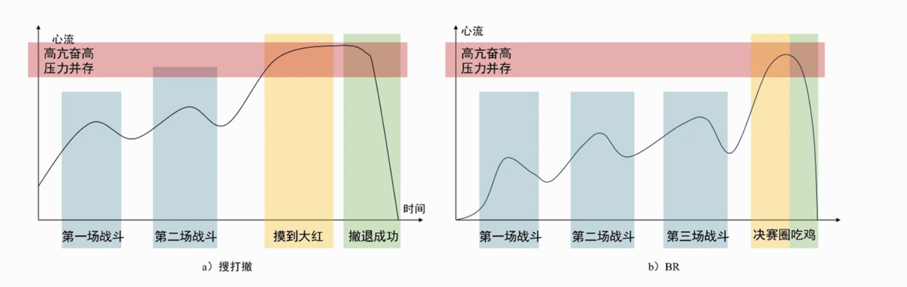
更重要的是，每位玩家在搜打撤中感受到的心流是不一样的。对于BR（大逃杀），不同玩家固然也采用不同的战略在不同核心资源区间进行转移，但是他们面临的心流态势大致是相同的。但是，一位“猛攻”大师和“跑刀鼠鼠”在游戏开局时的心理状态是截然不同的，并且不同的玩家开这一把游戏的目的也不尽相同：对于BR，吃鸡占了80%以上的目的；而搜打撤中，任务-资源（哈夫币）-战斗可能在不同玩家、同一玩家的不同对局中占比都有所不同，那么搜这一行为在同一局的玩家中都有不同的动力占比。
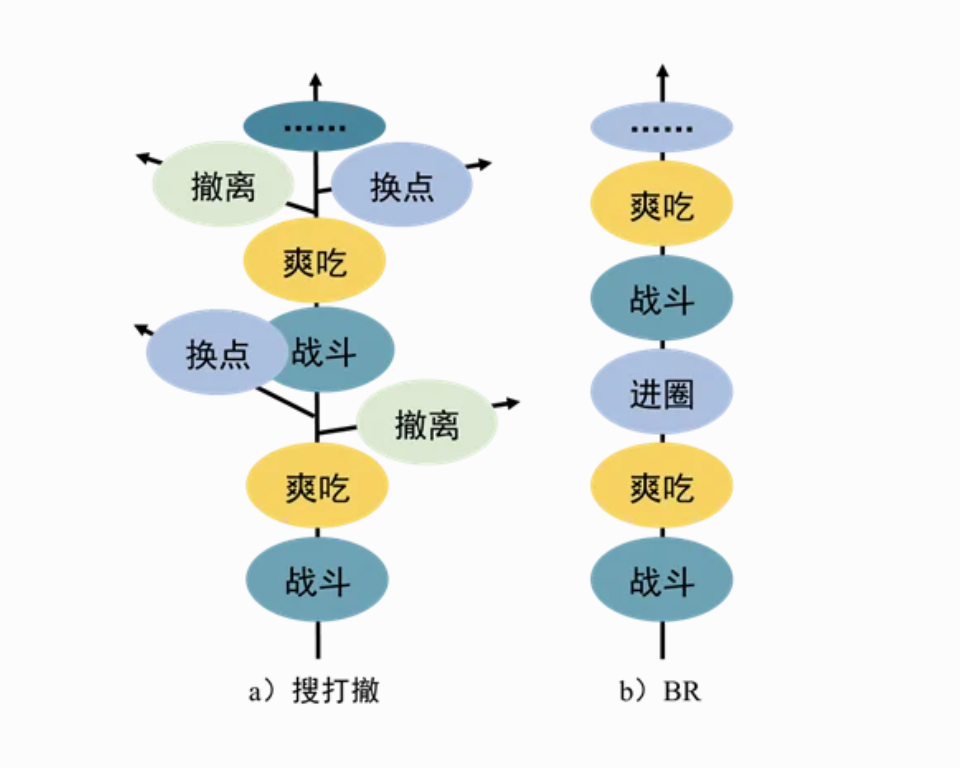
而且，玩家时刻可以有效影响自己的心流状态，如果开局就有幸摸到了“大红”，那部分玩家完全可以选择直接撤离；而更能接受压力的玩家也可以选择继续进入资源区，因为他猜到了这把是所谓“大红局”；但是对于BR，只有不断运营、战斗直到被淘汰。从这点来看，搜打撤又比BR给玩家提供了更多灵活决策的空间以及不同的核心游戏循环（Loop），这种灵活的空间进而让玩家无意中选择了自己可以适应的心流曲线。
1.1 搜（Loot）：让「过程」制造乐趣的策划心法
1.1.1 搜打撤的“搜”与大逃杀（BR）的“搜”，有何不同？
如果说正是“撤”给予了搜打撤异于BR的特殊点，还必须看到的是，“搜”（Looting）的设计与BR也有很大不同：
搜打撤的物资几乎全在容器里；BR常常遍地都是；
搜打撤的物资检视需要等待；BR不需要；
搜打撤的野外小型物资点随处可见；BR的资源点大多集中在高资源区内。
两者差异的最根本原因在于玩家的目标不同，BR的核心依然集中在战斗，对于一件物资，玩家需要更快捷地识别并拿到它；而搜打撤中的Looting需要与BR做出差异化设计。根据心理学，玩家越容易得到的物资，反而越不珍视。搜打撤需要玩家：自己跑到容器前、亲手打开容器、等待物资被检视出来，这个过程加强了玩家对搜索本身的乐趣，而非只是将其作为战斗的附属部分，这也是搜打撤玩法原本的意图。
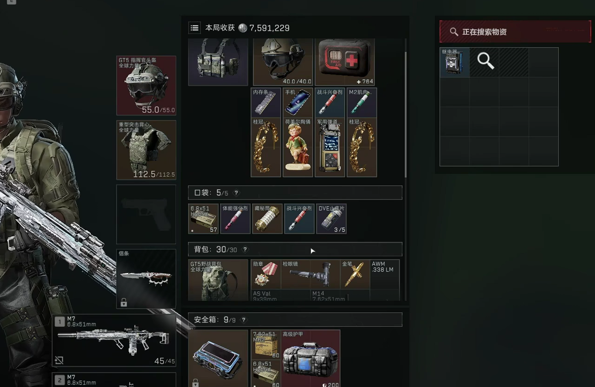
甚至对于一个高级别的物资（大红），检索的时间会更长，又进一步拉高了玩家的期待值，在这么一个微小的片刻中，玩家的心流又经历了一次小型的“起-落”，丰富、密集的资源点让这种Looting的心流不断重现，这是无法抗拒的，相信没有一个玩家能忘记第一次出大红时肾上腺素飙升的兴奋感。
1.1.2 怎么让玩家沉浸在游戏中搜的节奏中——5s搜索，2s鉴定原则
三角中的鉴定过程明显有别于rpg中的鉴定，rpg中的鉴定存在一个鉴定行为和结果的空档期，这在以即时反馈为主要的fps游戏中不太合适，尤其是玩家在鉴定时处于无法观察/移动/射击的完全被动状态，属于高风险期。若鉴定中没有有效反馈，压力与反馈不能平衡，玩家会难以接受延迟满足的鉴定设计。而三角洲中的鉴定将过程和反馈保持同步，过程越长，玩家对物品的价值预期就越高，期待不断拉高的同时，玩家处在被动状态也越久，暴露压力也逐渐增高，风险和反馈同步增加，强烈的情绪矛盾形成了三角洲中“摸金”中的爽感。
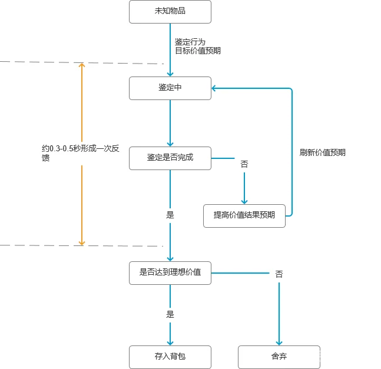
三角洲中的容器皆为散落分布，如此设计有两个目标：
（1）通过 寻找，鉴定的搜索循环建立和维持心流状态。
（2）通过促使玩家不停移动，给予玩家一定时间观察情况，思考收益和风险，做出即时决策，同时移动也会暴露自身信息，向周围可能存在的敌对玩家散发位置信息，寻找容器的过程中，即存在收益的可能，也存在暴露给其他玩家的风险。
散落设计本质上是提供连续多个的即时决策点，给予玩家寻找容器的目标性，也提供了搜集资源时的紧张与刺激感，但是也存在暴露玩家自身信息的风险。玩家需要即时做出决策，考虑收益和风险是否合适，以及如何应对可能存在的未知风险，满足了fps游戏中需要的即时反馈感。
我们暂时把 5秒寻找+2秒鉴定 称为搜索时间周期。
我们明确了容器为何是散落设计的，那还有一个问题，为什么是这个搜索时间周期？
5秒寻找的理论基础：
心理学上存在一定的研究表明，人类的工作记忆周期大概在3-5秒，《游戏设计的236个技巧》的作者 大野功二指出：5秒是维持玩家心流的最小策略单元。
这个时间段在三角洲中作为短期的决策窗口出现，时间过短的话在游戏中处理信息和做出决策的时间不足，玩家可能来不及做出正确判断，时间过长将中断心流状态（尤其在fps游戏这种更强调即时反馈的游戏类型）。
2秒鉴定的设计来源：
鉴定时间为2秒主要来自fps游戏的ttk时间，fps游戏中的ttk时间一般在1-2秒，鉴定行为的处于完全被动状态，鉴定时间过短将导致搜索容器的风险大大降低，不足以制造出风险和收益共存的情绪矛盾，时间过长将导致风险过大，玩家搜索容器的压力将显著大于收益。
首先假设寻找时间远低于五秒，容器之间的距离大幅缩短，玩家可能会陷入机械性的重复劳动中，且留给玩家的决策时间不足，玩家将满足与一直搜索容器而难以做出决策判断，在搜索完成后，玩家需要重新规划路线决策，陷入前往另一个资源点的赶路时间中，这两段行为造成的落差感太大，可能会中断玩家的心流状态。
同样寻找时间也不能太长，寻找时间作为敌对玩家获取信息的窗口，此时间处于一个微妙的平衡点，五秒足以赶到下一个容器点，也给予敌对玩家一定的信息；若寻找时间太短，对搜索玩家的风险过低，敌对玩家面临的进攻压力更高，同样，寻找时间太长，搜索玩家暴露的信息更多，风险将大大增加，进攻玩家的压力更小。
1.2 打（Fight）：刻意延长 TTK、降低死亡惩罚、机动性配额
1.2.1机动性
与其他游戏区分开，三角洲要破坏掉之前塔科夫游戏的拟真、写实、硬核的调性，构筑一种更加爽快、灵活的战斗体验，以吸引更多玩家。
除了枪械、3C（Character-Camera-Control）的手感向COD（Call of Duty）看齐之外，三角洲进一步调整了特战干员的机动性与TTK（Time to Kill）的关系，使其和COD保持在大致一个区间内。过短的TTK在搜打撤这种死亡惩罚较高的玩法中容易导致对枪博弈空间过小、玩家对局压力过大，适当延长TTK避免了CS2、无畏契约、PUBG等短TTK游戏中玩家“蹑手蹑脚”的战斗体验，护甲、倒地被补掉后依然能被救起、安全箱机制同时被引入了进来，降低了玩家的受击与死亡惩罚，这些都增强了其主动参与战斗的意愿，更能凸显出战术射击独特的魅力所在。
从机动性上，为了避免高机动性（如OW2、APEX中hero飞天遁地、无所不去）带来的长线游戏后期新手玩家门槛过高，并没有随意地为每个玩家都赋予滑铲等身法技巧的使用空间，而是谨慎地将其绑定在了特定干员（红狼滑铲、威龙喷气、疾风翻滚）身上。这样来看，反而加深了玩家对所熟悉的、更适合自己战斗风格干员的“羁绊”，每个玩家都可以利用其他玩家不具备的身法技能打出自己的“高光时刻”，而不是只被传统意义上的“职业哥”所垄断。
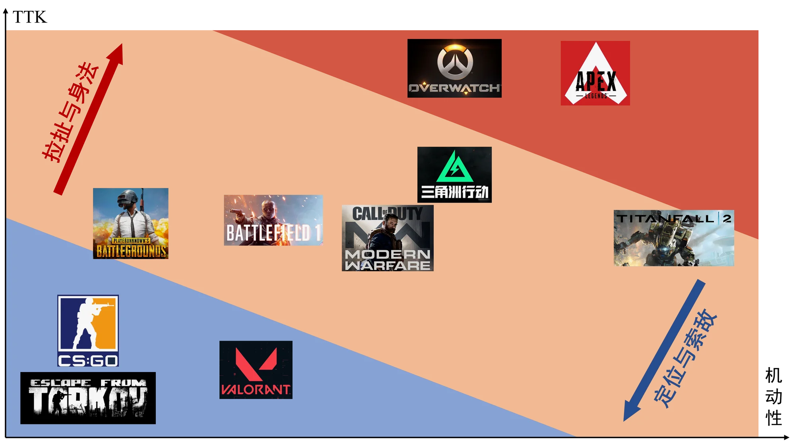
1.2.2地图设计
玩家之间的所有交互都在关卡内进行，关卡结构是影响玩家战斗体验的核心因素之一。以零号大坝的行政楼为例，行政楼楼体的二楼窗口较多，但是一楼却没有窗口，玩家从东西两侧进入行政楼区域后，开阔的死区和零散稀少的资源点推动玩家直接进入更安全的行政楼楼体内。行政楼东西楼的两个阳台均被放置在了楼体南侧，这使得整个行政楼内部更封闭、保守，无法完成对整个行政楼区域的完全控制，有效遏制了行政楼内外的频繁交火甚至是行政楼内队伍对邻近队伍的快速压制。这些都将大部分玩家的战斗框定在核心关卡设计区域内，避免交战不可预期地随处随时发生，否则有可能导致许多玩家都依托优势甚至“老六”点位使整个游戏的对局生态恶化；并且几乎没有任何预期的战斗更依靠玩家的枪法与身法，无法突出战术射击的策略性。
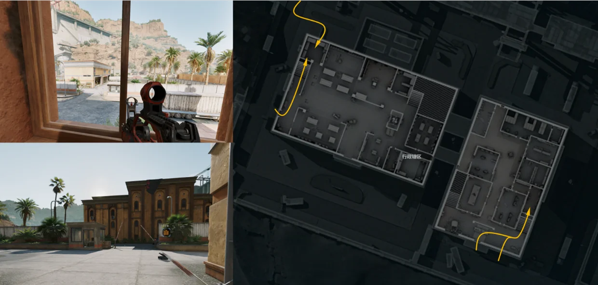
行政楼内，通过将更多的物资放在二楼、将通往二楼的楼梯设计在进入行政楼楼体的门窗较近的位置、西楼的二楼可以透过玻璃对一楼形成高打低的优势、包括前文所述二楼对整篇行政楼区域的视野更好等诸多设计，将玩家再一次“推”向二楼，玩家更直觉甚至自觉地参与到了对核心物资的竞争之中。
行政楼二楼房间的设计也颇为讲究，几乎所有房间中提供的掩体都无法提供一个全身位的遮挡，只有当玩家蹲下或趴下时才是绝对安全的。这让玩家几乎很多战斗的博弈并非发生在一个房间的内部，而是房间与房间之间、房间与走廊之间、走廊与走廊之间。门口、拐角形成了玩家使用技能、进行拉扯和peek的绝佳位置，而非体验几场房间内部的“纯粹”对射。走廊上同样设置了大量的掩体、从一个点位到另一个点位的通路也不止一条，这为处于劣势的小队创造了更多可以迂回、诱骗等策略性操作的空间，每一次精彩的反杀都将成为玩家自己心中挥之不去的记忆点，而不是每次队友倒地后都慌张撤退或完全绝望。不过，房间内低矮的掩体同样也为不得不采取避战策略的玩家提供了暂时喘息的机会，毕竟关卡是为所有玩家服务的，而并非仅“好战”玩家。
如上，这便是战术射击游戏的核心——每位玩家无时无刻不在确认着：敌人的位置和行动是什么？我的位置和行动需要是什么？通过相对增加OODA（Observation-Orientation-Decision-Action）循环中的Observation与Orientation的时间、减少Action的时间，使得狭义的战斗——对枪射击可以快速发生、快速结束，从而让玩家的心流快速涨起、快速落下，不必长时间保持在高压力的状态中，于是在保证了策略性的同时又保证了爽快感。
1.3 撤（Extract）：半环形撤离与条件撤离的张力维持
策划思路
撤离点类型多样：常规（无门槛）/ 拉闸（激活倒计时）/ 随机（绿烟标识）/ 付费 / 丢包 / 负重（条件撤离）。
地图半环形撤离结构让不同目的玩家各有路线：出生在图一侧，常用撤点在另一侧或中轴，跑刀与猛攻天然分流。而撤离则是循环的出口，也是风险—收益闭环的收口：撤出=保住物资，阵亡=同时丧失带入物资。
此处我们不重点论述，详细见2.2 新地图AZ3的地图设计论述中，AZ3对于游戏动线的极大利用和革新。
1.4 搜-打-撤循环中：数值可以起到什么作用？
1.4.1 搜
如上所说，在高价值区绑定高密度 PvP，是把风险—收益曲线空间化的核心手段。进入高资源价值区常伴有的多队密度，BOSS（高强度AI）、信号隔离区、通道卡等等设置限制了玩家“入场”的条件。此外，背包/保险箱容量直接限制单次带出量，是控制单局产出的硬上限，又让部分物资死亡可保留，避免直接变身0号大兵劝退新人。而每件物资有哈夫币估值，结算时做带出价值 vs 带入成本的风险回报计算。
1.4.2 打
①TTK 与死亡惩罚成反比：
高死亡惩罚的玩法必须配较长 TTK，否则博弈空间坍缩。这是搜打撤数值的第一性原理。
②护甲耐久 = 第二层数值：
参考APEX的护甲机制，让护甲成为玩家的第二层血量数值，
③技能是第二强度轴，须独立预算：
干员技能（位移速度、治疗量、减速比例）必须与武器 TTK 同步调参，否则出现「技能碾压枪法」的失衡。
一个最有时效性的例子就是：S9/10近期围绕玩家社区最大的讨论争议就是（类）工程位如液氮、回响、比特对玩家对枪空间的极大压缩，让狭小空间如航天总裁变成“人间炼狱”，最新更新中数值策划连发3次补丁，削弱了几大工程位的道具能力。
1.4.3 撤
①撤离时间 / 判定逻辑（范围+停留时长）是风险出口：倒计时太长→风险低→「撤」分过高；太短→容错低。这是调参变量。
②约束撤的设计：提高「撤」分（撤离变容易）会降低风险、但若过头会让玩家只撤不打；因此常用「加条件撤离」（丢包、付费、拉闸倒计时）维持张力。
③死亡惩罚 = 失去本局非保险物资：这个惩罚的期望值 = 带入成本 − 保险保留，是驱动玩家谨慎 vs 猛攻决策的核心数值。
1.5小结：搜 / 打 / 撤的「不可能三角」配平
参考我在找资料时看到的一个由迷游先锋引述的很有意思的搜打撤不可能三角理论：搜 / 打 / 撤三者此消彼长，没有任何一把能满足三角全满——
提高「搜」分（遍地黄金）→ 玩家为保资产避战 → 「打」分下降；且大量高价值带出 → 通胀 → 需减少撤离点或加条件 → 「撤」分下降。
提高「撤」分（撤离容易）→ 风险↓，但需限制撤或加条件维持张力。
提高「打」分（鼓励交战）→ 需限制撤或加条件维持张力。
那么对于这三类行为的各大模型进行调参就是在三角里找当前生态下的最优配比。这也是整个搜打撤论述的落点——搜/打/撤每个动作的数值旋钮，最终都服务于这条三角曲线。
二、当下三角洲的策划重点议题
本节主要针对当下时效性最高的论题进行个人看法补充，并补充1.3 中对撤离的论述。 共涉及：护航灰产的经济失衡探究、AZ3 新地图个人拆解、陈泽杯/主播巅峰赛电竞争议等。
2.1 护航产业与灰产经济：经济失衡的「症状」而非原因
不是所有人都有时间和耐心去“攒哈夫币”，那么金钱换时间的交易灰产，就自然诞生了。
哈夫币场外汇率：在所有哈夫币-人民币中，最低的汇率，即第三方交易（租号）约为 1:30-40（1000 万哈夫币 ≈ 30-40 元人民币），随单笔交易量浮动；即使官方不“卖”哈夫币，但灰产完整填补了这一方面的需求。
两种服务模式：
跑刀（代肝）：租号→局内物资全交老板，时薪约 30 元，集中于大学生/无业/跨国人群；但本质是将自己的号给别人打，有极高的封号风险（异地、脚本、甚者直接物资透），需要平台约束。
护航（保镖打手）：三人成队帮老板猛攻带出，一般的倍率为1：6-10；顶级魔王护月入 高达3-6 万。按撤离局数结单，炸单补损；定价与哈夫币比例非线性（撤离两局单价 ≠ 单局×2）。
官方外的游戏附加服务本是给游戏带来日活的捷径，但灰产行业需要官方监管和约束。
比如最常见的外挂红护乱价——红护单可低至几十元接单，亟需官方追缴外挂收益，限制有关俱乐部。
除此之外，在游戏玩家中也存在“阶级固化风险”：老板队（高价值装备+高效掠夺）vs 跑刀供给者（基础币源），普通玩家夹在中间——形成「有钱雇人掠夺，辛苦跑刀成底层供给」的“阶级”差异。
灰产是经济失衡的显性症状。当装备溢价、爆率被压、普通局内收益远小于维修/弹药消耗，玩家自然用钱换时间买护航；官方为维持货币动态配比又被动拉高消耗（装备/消耗品涨价）。这正是第 0 点之外、3.2 要讲的「入口必须 < 出口」压力在真实生态里的落地——但代价是把大量玩家逼成“局内上班”，侵蚀乐趣，这是数值策划亟需平衡去维持的经济健康度。
2.2 新地图 AZ3 的新要素如何给游戏带来活力（个人拆解）
AZ3 核电站是 S10（裂变）赛季上线的烽火地带常驻新图，以核反应堆为核心、引入动态辐射机制。它给游戏带来活力的方式，可以从地图设计、新机制、风险—收益再激活三方面拆解。
① 地图设计：三层立体 + 东/西/中轴分区，中轴线梯度方法论
地图分为东区、西区、中央核心反应堆三大板块，地面与地下多层互通（地上办公楼/控制室、地下仿星研究室/反应堆深坑、核心反应堆本体）。
14 个出生点位（东西各 7，各含 1 个必刷固定位，其余互斥随机），单局固定 8 支队伍（东西各 4 队）。这是对专项剖析第 5 节「出生点分层 + 半环形撤离」方法的继承。
统一时长 30 分钟、无信号屏蔽区，对新手更友好；机密模式准入门槛约 112500 哈夫币。
AZ3 密钥连锁房：在高资源点附近随机刷免费密钥（滴滴声提示），拾取后定位指引找秘钥房；紫→金→红逐级连锁，红密钥房的等效价值堪比红卡。
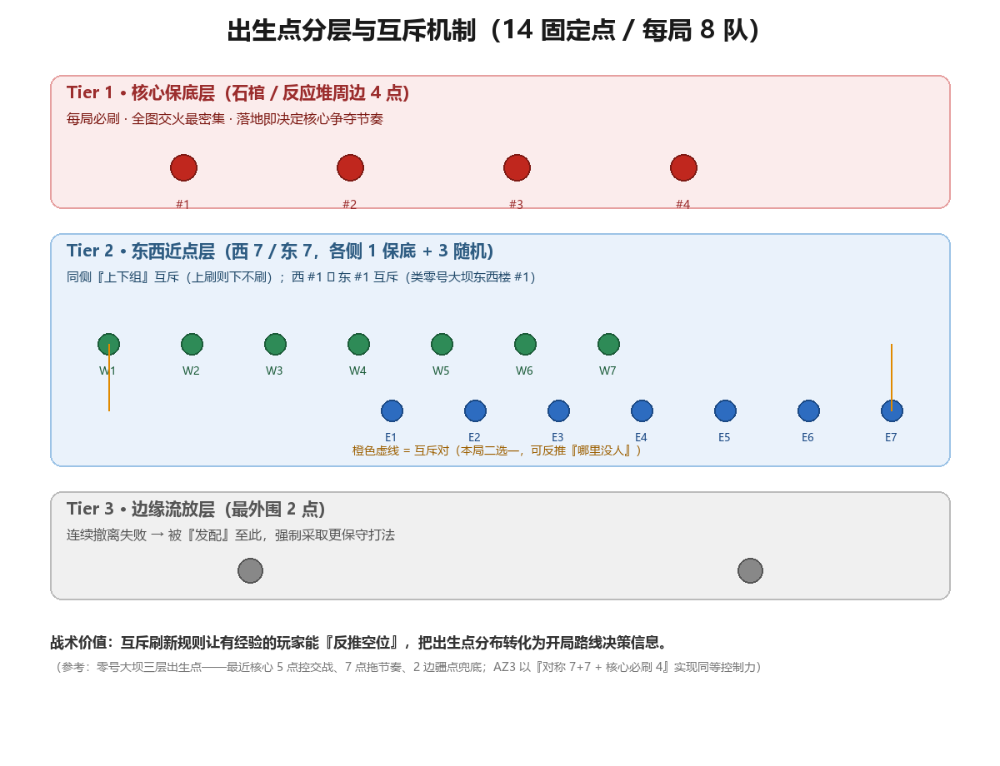
② 新机制：辐射 —— 一把动态难度旋钮
四级辐射 Debuff：1 级视觉噪点（不碍作战）→ 2 级白噪音干扰听声辨位 → 3 级持续咳嗽+掉血+暴露位置 → 4 级降低血量/体力上限且止疼药无法抵消。深层反应堆/地下研究室 30 秒可叠满 4 级。
净化途径：洗消舱室、哈夫克洗消小队、特勤处洗消室升级（提升基础抗辐射、辐射自然衰退效率）。这等于在地图里塞了一套新的可重置的负面状态管理子系统。
核爆倒计时 + 紧急停堆任务：终局 5 分钟启动核爆预警，仅留两处最终撤离点；反应堆升温满值则全图持续辐射掉血。
辐射泄露房：无传统免保点位，取而代之的是高概率刷高价值辐射容器的特殊房，把「高风险高回报」空间化、随机化。
③ 为什么带来活力
降低入门门槛、给跑刀的鼠鼠们更多选择：AZ3 密钥保底小金、高概率大红，等于在地图里埋了一条低成本玩家的可控高收益路径，缓解了老玩家资产压制新人的贫富矛盾。
辐射是动态难度旋钮：把是否进深辐射区变成玩家的风险决策——进得越深回报越高，但代价是可量化的状态管理，辐射带来的信息暴露进一步验证了风险-收益曲线的重要性。
密钥连锁 = 可控的爆率曲线：秘钥续杯把一次好运延展成一串可预期的奖励序列，比纯随机掉落更可控、更上头，是搜打撤 Loot 心流的升级版。
终局事件制造叙事与紧迫感：核爆倒计时 + 紧急停堆、33任务最终的阿萨拉存亡抉择把单局收口做成抉择事件，提升每局的戏剧性与重开价值。
2.3 搜打撤电竞化：用经济激励把「避战」扭成「主动对抗」
① 赛事固有矛盾：高风险≠高收益，短 TTK 试错成本极高→稳健成最优解；而三角洲的搜打撤模式又缺乏传统赛事的直接竞争目标（无攻防压力、无唯一生存者），缺主动绞肉噱头；即便引入曼德尔砖破译作赛点，可见在高手如云的赛场，选手仍偏架点防御（极端甚者可以全局无对抗、18 人扎堆抢撤离点）。
② 烽火职业联赛（官方）的破局：
多轮积分赛制 + 夺砖（单队破译送出两次即杀死比赛）；
击杀补刀给高额积分 + 60 万哈夫币现金奖励，对手出局掉落的铭牌随进程升值；
统一发币 + 连败经济补偿 + 限制高等级甲弹购买次数 → 抹平装备压制、引入传统竞技的 ECO 局运营思维。
③ 「炸鱼杯」争议：陈泽杯的机制公平性危机
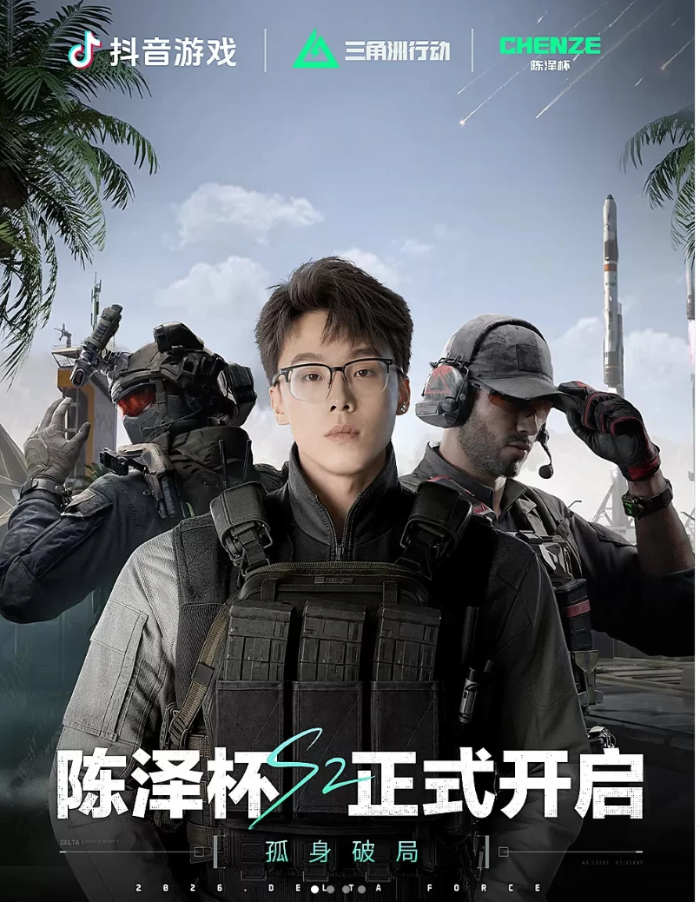
陈泽杯、齐家杯、海胆杯等主播冠名民间赛事，冠军奖金高达 100 万，但因官方正规赛事起步晚、曝光低而成了社区关注中心。
核心问题：这些杯赛直接套用游戏内普通排位匹配，未启用独立比赛服务器——普通玩家在不知情下排进对局，沦为参赛大神刷分的「背景板」，被玩家定性为「炸鱼杯」（高玩碾压低段）。
即便选手单人入局，面对 2–3 人路人队，装备与实力鸿沟仍让路人无体验。多位其他游戏 KOL 公开批评违背电竞公平原则。
④ 主播巅峰赛（官方办）的相对成功——对照样本
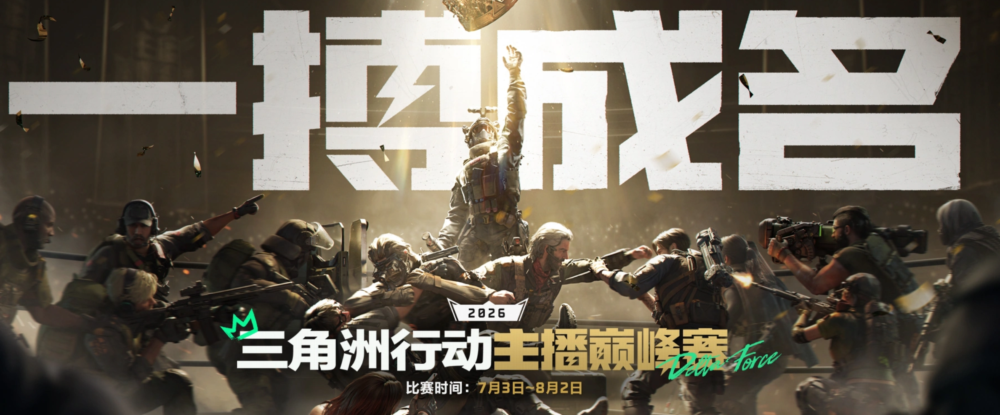
由官方主办的「主播巅峰赛」决赛将在上海举办，近一个半月赛程、600+ 主播参与；官方直播间抖音+B站累计观看破 600 万、B站单平台点赞超 180 万，线下数千玩家奔赴现场。
关键差异：官方提供了自定义比赛服（与炸鱼杯的套用官匹：“对局里其他15个玩家知道他们在打比赛吗？”截然相反），并设计了更完整的赛制（硬核竞技 + 娱乐整活 + 新人孵化 + 选拔晋升，含观众投票复活等）。
总结：民间主播杯（陈泽杯等）流量极大、社区能量惊人（陈泽杯 S2 走进杭州小莲花万人体育馆，线上峰值 277 万、总观看 1.5 亿），但公平性质疑吞噬了赛事信用；而官方主播巅峰赛用独立比赛服 + 规范赛制守住公平底线，相对成功地证明官方有技术能力做隔离赛。
启示：搜打撤电竞化可行，但前提是赛事匹配必须与普通匹配池隔离，否则搜打撤内核会变成公平的软肋。可降维借鉴到常规匹配：职业联赛的击杀/补刀给局内币奖励 + 连败软性补偿（非数值付费）思路，可缓和猛攻玩家劝退与跑刀玩家孤立，而不破坏不删档公平底线——这是一个微型平衡沙盒的结论。
2.4 不删档 → 逼猛攻的回收逻辑：长线运营的必然困境
塔科夫的做法：定期删档，经济回到同一起跑线，长线活力靠清零循环维持。
三角洲的取舍：为拉新打出不删档招牌 → 老玩家持续累积海量哈夫币 + 高级装备，若不控则系统性恶性通胀。
官方需要一台"系统回收站"：猛攻恰是完美绞肉机——官方改机制（暗改爆率、赛季加红、改撤离人数限制、公式化航天）鼓励猛攻，并办猛攻赛事引导风气，每年设置猛攻节送出各种装备，让玩家觉得猛攻才是正确玩法。
底层逻辑：跑刀/整活/和平发育 → 资产只升不降、哈夫币消耗不掉；唯有猛攻 → 高频死亡 → 几十万到上百万装备瞬间蒸发，完成货币回笼。
这是不删档长线运营的结构性困境——必须在留存（不逼氪/不删档）与消耗（控通胀）之间找平衡。逼猛攻消耗是相对温和的回收手段，副作用是劝退休闲/跑刀玩家。可对比三种回收范式：塔科夫删档（硬清零）、暗区突围赛季制（软赛季）、三角洲不删档+动态消耗（长线压力）。
三、游戏内外物资 / 装备 / 武器系统的数值方向拆解
3.1 建立伤害公式：可复用的黑盒（甲伤 / 距离衰减 / 部位倍率 / TTK）
四层结算模型（可复用的计算骨架）
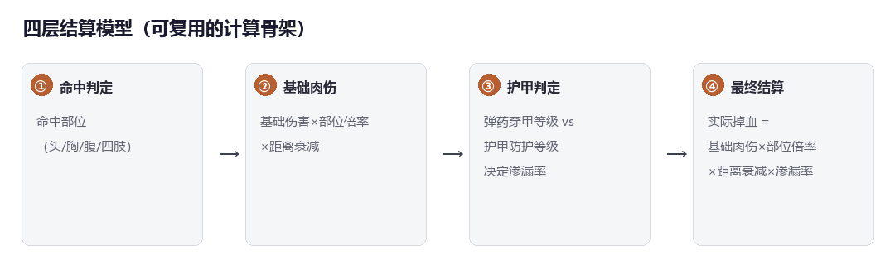
① 部位倍率
| 部位 | 倍率(近似) | 说明 |
| 头部 | ×1.9（狙击枪为2.5） | 极高奖励机制，鼓励爆头，增加玩家枪法对对枪的实际影响 |
| 胸部 | ×1.0 | 基准部位，即面板「基础伤害」对应处 |
| 腹部/下半身 | ×0.9 | 略低于胸部 |
| 四肢 | ×0.4 | 明显衰减，打手、腿难快速击杀 |
② 距离衰减：看面板 优势射程——射程内 100% 满伤；超出后逐段衰减到保底下限。子弹初速不影响伤害，只影响提前量。
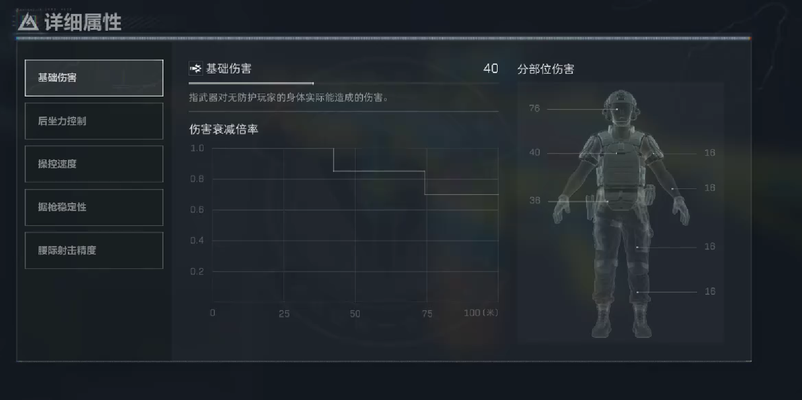
③ 护甲渗漏率：由 Δ = “子弹穿甲等级 − 甲防护等级” 决定——
| 等级关系 | Δ | 肉伤渗漏率 |
| 弹高于甲 ≥ 2级 | ≥ +2 | 100% |
| 弹高于甲 1 级 | +1 | 75% |
| 弹等于甲 | 0 | 50% |
| 弹低于甲 1 级 | −1 | 0% |
| 弹低于甲 ≥2 级 | ≤ −2 | 0% |
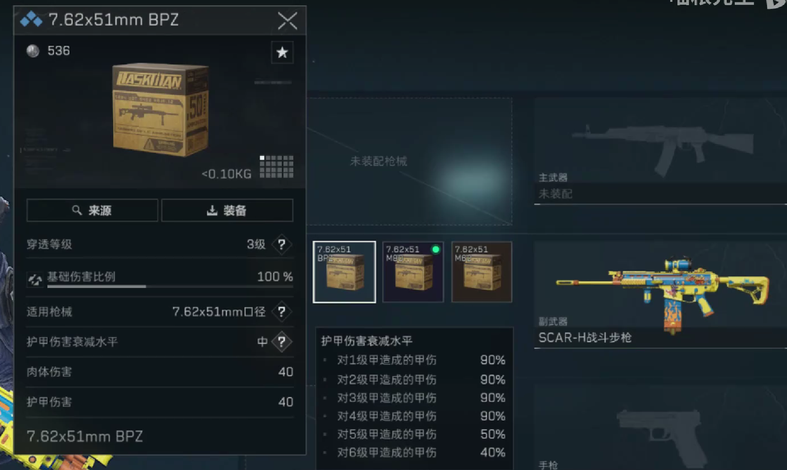
而甲伤的比例需要参考如图具体子弹（图中为4级弹的甲伤比例）对甲造成的甲伤，其中5/6级弹对所有护甲的甲伤为110%
④ 单发掉血与 TTK 计算（可复用公式）
由以上三点我们可以总结出一套伤害计算公式
单发肉伤 = 基础肉伤 × 部位倍率 × 距离衰减系数 × 渗漏率(无甲=1.0)
单发甲伤 = 基础甲伤 × 距离衰减系数 × 子弹甲伤倍率(一般从0.4-1.1)
理论 TTK(ms) ≈ 目标有效血量 / 单发掉血 × (60000 / 射速RPM)
实例（AS Val 官方基础面板：肉伤 29 / 甲伤 48 / 射速 972 / 优势射程 27m / 初速 330）
贴脸无甲胸：29 × 1.0 × 1.0 × 1.0 = 29 → 4 发 ≈ 185ms（超高射速击杀极快）。
≤27m 三级甲同级弹（Δ=0，渗漏≈0.75）：单发进血≈22.6，前几发破甲（甲伤 48）后转入满肉伤。
≤27m 高一级甲低一级弹（Δ=−1，渗漏≈0.5）：单发进血≈14.5，靠超快破甲+破甲后收人，或打头绕甲。
45m 超射程（衰减=0.75）：无甲胸 29×0.75≈21.75 → 5 发，印证中近距离枪，可以看出官方S10对AS VAL削弱对其中距离作战能力的腰斩影响之大。
实例（为什么45满耐的havvk防爆头盔可以刚好防下一枪5级弹狙击？）
护甲结算：甲伤 63.8 > 耐久 45，防爆头盔被击碎，可以提供的减伤部分为 45 / 63.8 = 0.705。
实际掉血 = 爆头伤害 × [ 无减伤部分 + 减伤部分 × 穿透系数 ] = [ 61 × 2.5 ] × [ 29.5% + 70.5% × 50% ] = 152.5 × [ 29.5% + 35.25% ] = 152.5 × 64.75%= 98.74375 <100
3.2 经济数值是留存命门：入口—出口配平决定贫富分化
核心矛盾：入口必须 < 出口。入口（局内掉落/任务/卖货/制造）增发哈夫币，出口（弹药/维修/交易税/制造材料/外观）回笼。一旦入口≥出口→货币贬值、老玩家资产膨胀。
通胀的赛季三段式（S10 复盘）：前期保值期（物资稀缺、汇率稳）→ 中期波动期（新图开放、产出溢出、物价回落）→ 末期跳水期（物资贬值、变现难）。
爆率下滑伤留存：大红爆率决定赌徒盘吸引力，但断崖式下调直接伤留存（玩家大量差评指向爆率下滑）。这是搜打撤经济最经典的长线通胀失控压力。
交易税是杠杆：系统收 10% 手续费，是定向放水阀。
对比塔科夫：塔科夫用赛季删档回到同一起跑线；三角洲靠动态风控+交易税+产出调控+外观消耗控经济——但外观对硬核玩家穿透弱，于是转向压产出，体感即爆率下降。
考虑迭代，可以给出建议：数值表中最该建立的监控仪表盘：
| 监控指标 | 预警信号 | 对应调控手段 |
| 哈夫币流通量 | 环比增速异常 | 压产出 / 加消耗品 |
| 人均资产 | 贫富差扩大 | 限购 / 动态风控 / 活动产出 |
| 交易行换手率 | 流动性枯竭 | 放宽交易 / 活动刺激 |
3.3 数据驱动平衡（迭代）：出场率 / 胜率 / TTK 三张表 + 50 枪基线快照
什么是三角洲中的迭代？参考官方表述——结合全赛季大数据，对主流枪械属性、后坐力、适配场景优化，平衡强势枪械出场率，盘活冷门枪
① 三张表是枪械平衡的日常工作
出场率：识别非 ban 必选的版本答案；
胜率（分模式/分距离段）：识别超出预期的强度；
TTK 分布：识别过短/过长导致体验劣化的枪。
② 结合版本补丁看迭代关键因素：以 S9 AS VAL 为例（具体数值调整计算）
S8→S9 的 AS VAL（巨浪）迭代路径：S8 加强衰减后一跃成天王级近战；S9 策划选择保留输出、削弱交战距离——裸枪优势射程 27m→21m、初速 330→300m/s，但核心肉伤/甲伤不动，直接导致现如今的绝航巨浪在中远距离交战的劣势被无限放大）。
数值调整的计算含义：衰减曲线 0–27m 100% 伤害、27–54m 90%——削弱后近战强度不变、中远距离（>21m）开始更早衰减，等于把它的有效作战半径砍掉约 6m，温和地把生态位从全距离威胁收窄到近战优势。
结论：数据驱动平衡不是纯粹的砍数值，而是用距离/射速/弹药等级/新的强势枪械的组合，在保留爽点的前提下收窄过强生态位——这正是数策日常迭代的范式。
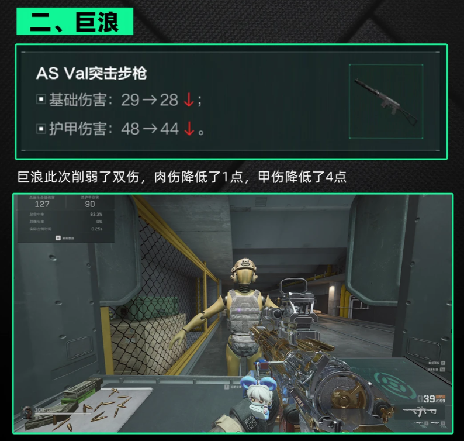
数据来源与说明
机核《如何构筑节奏与战斗体验》— https://www.gcores.com/articles/202087
机核《烽火地带系统拆解》— https://www.gcores.com/articles/201446
GDC2025《大规模 PvP 关卡设计》（董海阳，游戏葡萄转载）— https://www.163.com/dy/article/JRK41BP305268BP2.html
GDC2025《成为自己的英雄·战斗设计法则》（杨金昊）— https://lingyuq.com/news/456085.html
凤凰网 GDC 综述 — https://i.ifeng.com/c/8i1DeXCvzTD
S10「裂变」赛季官方前瞻（AZ3 地图）— https://df.qq.com/cp/a20240906main/newsdetail.html?id=7795502287596888186
迷游先锋《万字测评》（搜打撤不可能三角）— https://new.qq.com/rain/a/20250930A07E5W00
新浪财经《狂飙的三角洲》— https://finance.sina.com.cn/roll/2025-09-11/doc-infqcini8450938.shtml
NGA 经济长帖《仅从底层讨论三角洲的经济体系与问题》— https://bbs.nga.cn/read.php?tid=46965758
今日头条《S10 赛季物资通胀复盘》— https://www.toutiao.com/article/7661171994859242030
护航产业 / 灰产经济 — https://finance.sina.com.cn/stock/t/2026-02-09/doc-inhmenrt9437454.shtml
搜打撤电竞化（职业联赛）— https://new.qq.com/rain/a/20260518A0906R00
不删档 → 逼猛攻回收逻辑 — https://www.vgover.com/zh-tw/news/220730
AZ3 地图实测攻略（700g / 18183 / dvg.cn，2026-06）— https://www.700g.com/zixun03/239545.html 、 https://m.18183.com/gonglue/202606/8966332.html 、 https://dvg.cn/danjigl/162128.html
陈泽杯 / 炸鱼杯争议（游民星空 / gamersky / 233乐园 / gamegeeker，2026）— https://wap.gamersky.com/news/Content-2163399.html 、 https://www.233leyuan.com/post-detail/2074169089253060608
主播巅峰赛（搜狐，2026-07）— https://m.sohu.com/a/918135729_204824
S9 枪械平衡（17173 / dvg.cn / toutiao，2026）— https://news.17173.com/content/05182026/131228136.shtml 、 https://dvg.cn/danjigl/160950.html 、 https://m.toutiao.com/article/7626596897188266550/